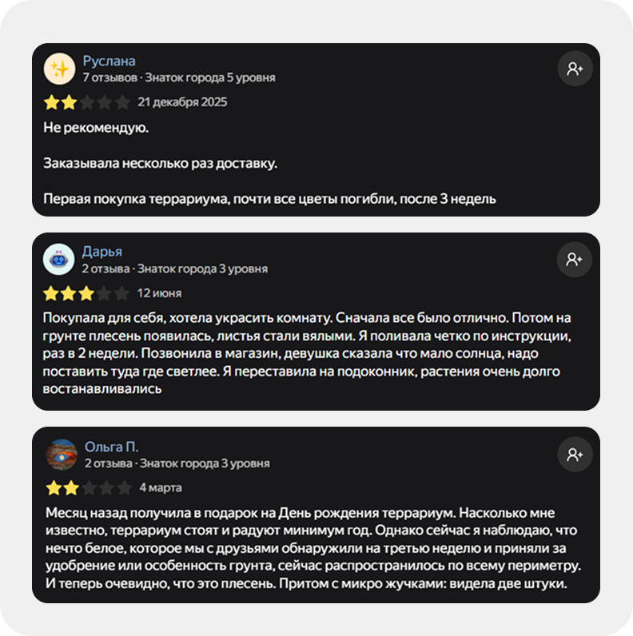
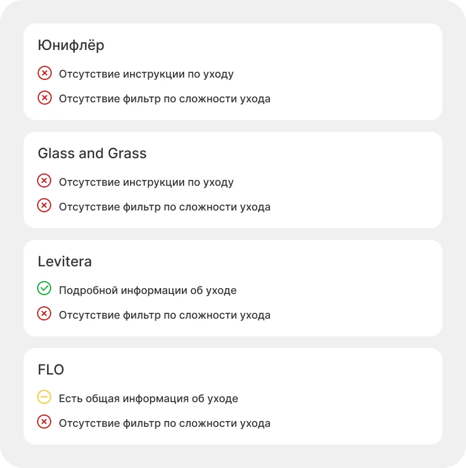
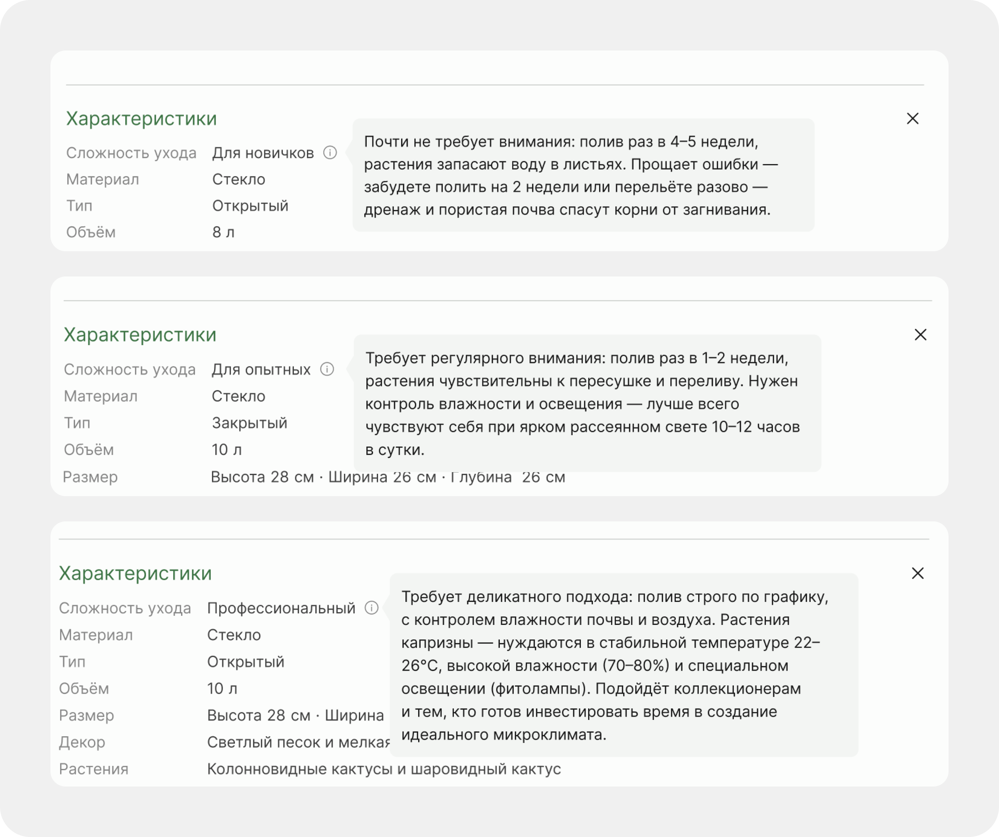
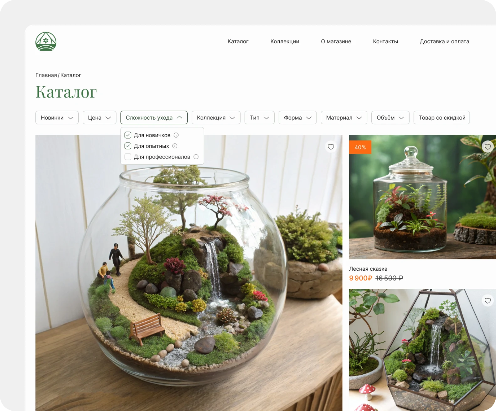
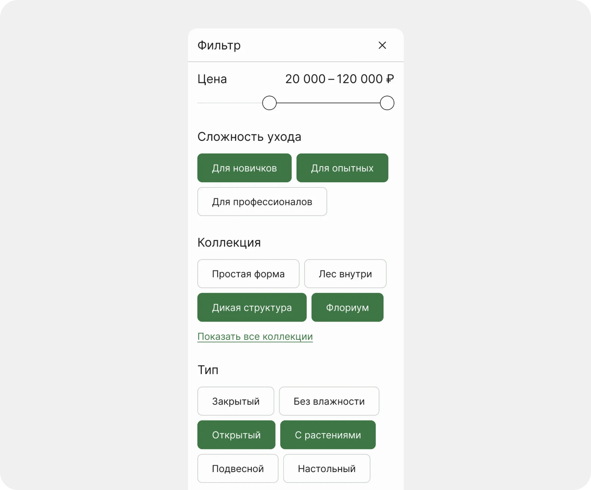
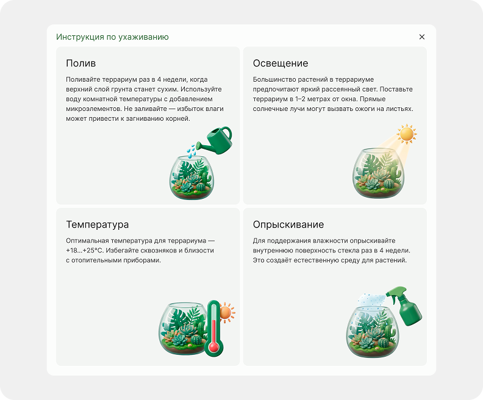
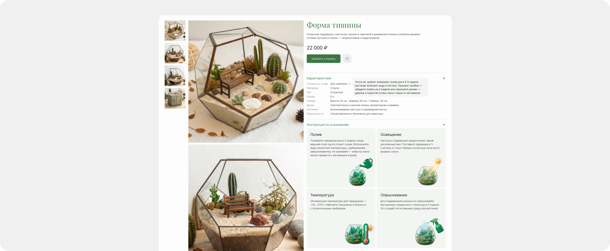
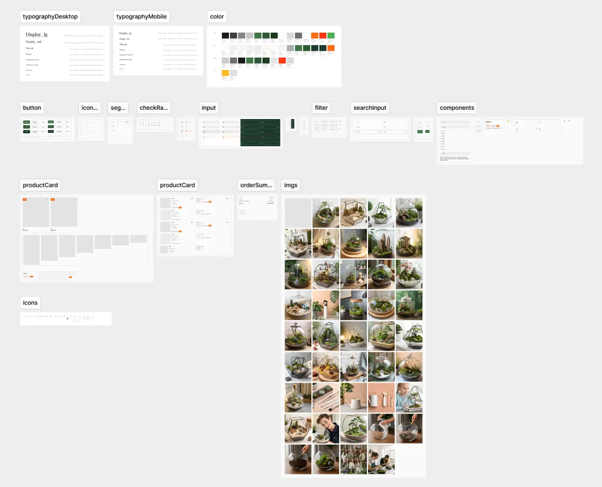

Магазин декоративных террариумов «Тайна террариума»
Задача
Разработать интерфейс интернет-магазина декоративных террариумов, который охватывает ключевые этапы взаимодействия пользователя: знакомство с ассортиментом, поиск и выбор товаров, оформление заказа и получение информации о магазине.
Особое внимание уделить одной из основных пользовательских болей — отсутствию понятной информации об уходе за террариумом. Решить её на уровне интерфейса и заложить в структуру каталога и карточки товара.
Собрать все страницы на основе единого UI Kit с проработанными компонентами, вариантами и состояниями для обеспечения консистентности и масштабируемости интерфейса.
Проблема
Пользователи не знают, как правильно ухаживать за террариумом. Инструкции в магазинах общие, без конкретики.
Отзывов показывает, что среди негативных комментариев часто встречаются жалобы на гибель растений, плесень или гниль. При этом пользователи пишут, что инструкция отсутствовала или была слишком общей, и они действовали на своё усмотрение.
Анализ конкурентов
Большинство компаний либо игнорируют информацию об уходе, либо дают её в минимальном объеме, без структуры и персонализации. Пользователь предоставлен сам себе, он не знает, как правильно ухаживать за конкретным террариумом, и вынужден искать информацию на сторонних ресурсах или обращаться в поддержку сайта.


Гипотеза
Если добавить в интерфейс магазина понятную градацию сложности ухода с тремя уровнями и развёрнутую инструкцию с конкретными параметрами, то пользователи будут реже совершать ошибки при уходе, потому что получат чёткие, персонализированные рекомендации, которые позволят им действовать уверенно и правильно.
Фильтрация по сложности поможет отсеивать неподходящие варианты, а персональная инструкция в карточке товара даст готовый план действий вместо общих фраз.
Решение
В характеристики товара добавил три уровня сложности ухода с описанием: для новичков, опытных и профессионалов. Это позволяет пользователю оценить свои силы ещё до выбора.
Вынес уровни в фильтр каталога. Пользователь отсеивает неподходящие варианты и видит только те террариумы, с которыми справится сам или тот, кому он выбирает подарок.
В карточке товара добавил раздел с инструкцией по уходу с конкретными параметрами для каждого террариума:
- Полив
- Освещение
- Температура
- Опрыскивание
Вместо общих фраз пользователь получает готовый план действий.





Главная страница
Главная страница решает задачу быстрого знакомства с магазином. Пользователь сразу видит новинки, понимает специфику продукта и может в один клик перейти в каталог.

Компонент карточки товара
Карточка товара собрана в виде компонента с вариантами и состояниями. Через свойства компонента можно изменять изображение, отображение скидки, состояние избранного и другие параметры без создания отдельных элементов.


UI Kit
Для проекта разработан UI Kit, включающий кнопки, чекбоксы, тоглы, инпуты со всеми состояниями, теги, компонент поиска, фильтры и карточку товара. Каждый компонент имеет варианты и состояния, что позволяет собирать страницы из готовых элементов без создания новых.
